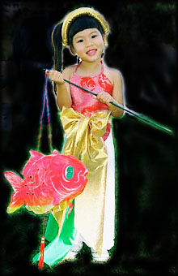
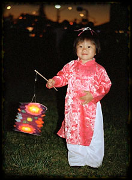

ORIGIN AND MEANING OF THE MID-AUTUMN FESTIVAL

Mid-Autumn Festival had started since the dawn of the agricultural civilization that was dated back some fifteen to twenty thousand years ago in Southeast Asia. The fete falls on the fifteenth day of the eighth month of the Oriental calendar, the day with the longest night of the year when the moon shines the brightest. It is also in the month when all agricultural toiling on the first crop season has come to an end, and there is nothing else to work on until the next crop. As a celebration of life and a successful crop, the folks rejoice in activities that, over times, have evolved into traditions that honor family life with its affection for the younger generation and that promote education, innovative ideas, music, arts and crafts, and poetry. Myths and legends are abounding, and the most popular is one used to encourage hard work in school to prepare for accomplishments later in life: the legend of the carp that achieved the impossible through perseverance and dedication,and transformed itself into a dragon as a result.

The lantern procession is the main Mid-Autumn Festival activity that honors the legend, and everything else comes together around the procession that meanders along the neighborhood's streets the whole night. The children's creativity will be challenged with a unique design for their own lanterns that they will construct themselves(or with the adults' help), then parade proudly at the procession, singing joyous mid-autumn children songs. Also familiar are the scenes of families gathering in the garden with friends and neighbors to sip fragrant teas while nibbling at mid-autumn delicacies such as moon cakes, lotus seed paste cake, mung bean cake, and gazing at the bright moon above, composing and reciting poems, or discussing about arts and literature.